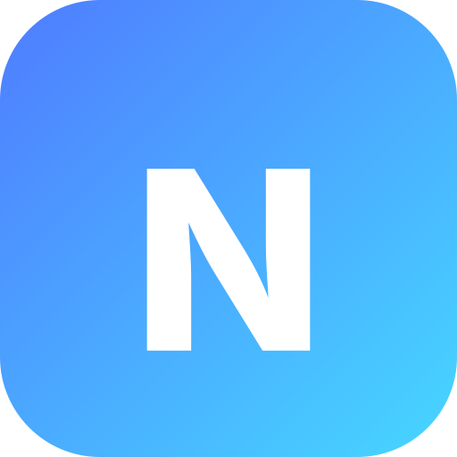

NORAEffective date: September 28, 2026
NORA ("NORA", "we", "us") is a personal reminder and task assistant you talk to by voice or text. This page explains, in plain language, what information NORA collects, why, who else ever sees it, and the controls you have over it.
When you use the microphone, the audio is sent to our speech-to-text provider to be transcribed into text, and to generate NORA's spoken replies. We do not store your voice recordings — they exist only for the moment it takes to process that one request, then they're discarded.
To deliver reminders as push notifications, your device registers a subscription (a technical delivery address, not personal content) with Apple's or Google's push notification service. We use it only to send you the reminders you set.
We record basic, non-content events tied to your account — like when you open the app, how long a request took, or that a screen loaded — to find and fix bugs and keep NORA reliable. We also receive standard technical information any web request carries (device/browser type, IP address) through our hosting provider's own logs.
We do not use your data for advertising, and we never sell it to anyone.
NORA relies on a small number of specialized service providers ("sub-processors") to function. Each only receives what it needs to do its specific job:
| Provider | What for | What they receive |
|---|---|---|
| Supabase | Database, authentication, and server hosting (EU servers) | All account and content data described above |
| Groq | Understanding your messages and transcribing your voice to text (default) | Your message text or a single voice recording, per request |
| OpenAI | Generating NORA's spoken voice replies, and as an alternate provider for understanding/transcription | The text to be spoken, or a single voice recording, per request |
| Apple & Google | Delivering push notifications to your device | An encrypted notification payload and your device's delivery address |
Each provider is bound by its own privacy commitments and only processes data to perform the function listed above — not for their own purposes.
We keep your account data for as long as your account exists. Deleting a task, a memory item, or your whole account removes it immediately and permanently — deleting your account also cascades to every task, reminder, conversation, and memory item tied to it, with nothing left behind. Voice recordings are never retained past the moment they're transcribed.
If you're in the European Economic Area, the UK, or another jurisdiction with similar protections, these rights correspond to your rights under applicable data protection law (such as the GDPR), including the right to object to processing and to lodge a complaint with your local data protection authority. Contact us (below) for anything the app itself doesn't yet let you do directly.
NORA is not directed at children, and we do not knowingly collect data from anyone under 16.
Data is encrypted in transit, and access to the underlying database is restricted to what the service itself needs to function. No system is 100% secure, but we treat your data — especially your voice and personal reminders — as sensitive by default.
If we make a material change to how NORA handles your data, we'll update the effective date above and, where appropriate, let you know inside the app.
Questions, requests, or concerns about your data: support@nora.app